Remisage d'hiver
Roulottes, VR, autos, pick-ups, bateaux, motos et Spyder, à l'intérieur, dans les bâtiments de l'Expo. Assuré, plus de 20 ans d'expérience.
- Entrée
- mi-octobre
- Sortie
- mi-mai
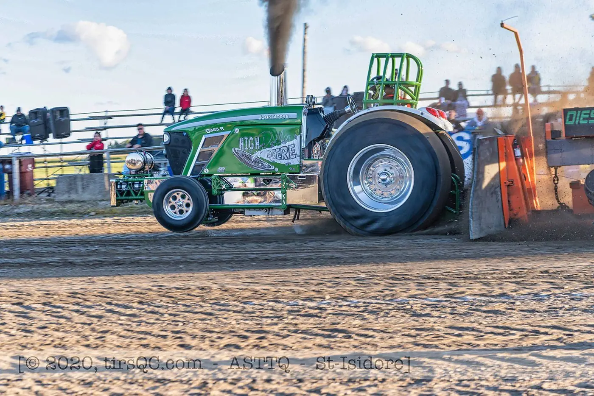
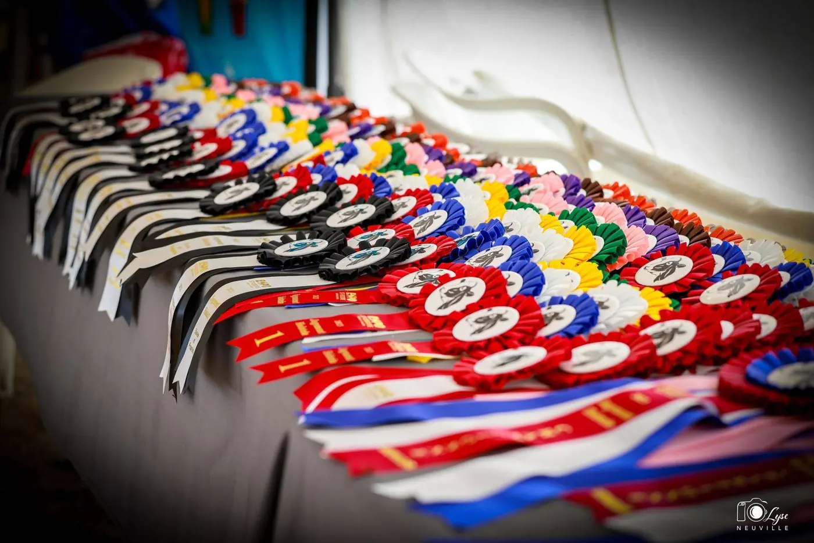
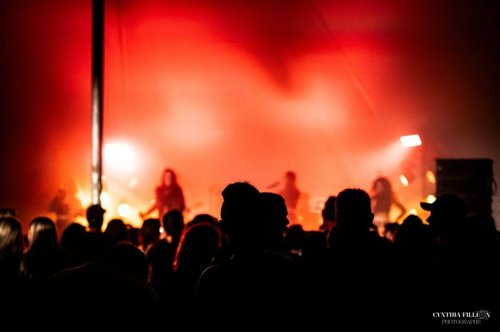
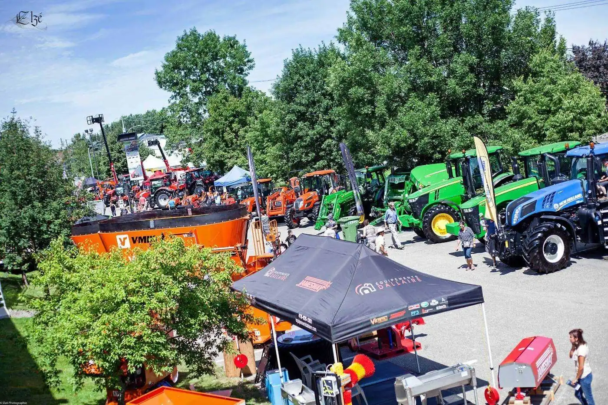
Entrée gratuitedepuis 1983
Merci d'être venus à la 44e édition. Six jours d'agriculture, de tracteurs et de fête à Saint-Isidore, en Beauce. Les dates 2027 seront annoncées au printemps.
La grande semaine, c'est en juillet. Le reste de l'année, les bâtiments de l'Expo travaillent aussi : remisage, location de salle et danse country.
Roulottes, VR, autos, pick-ups, bateaux, motos et Spyder, à l'intérieur, dans les bâtiments de l'Expo. Assuré, plus de 20 ans d'expérience.
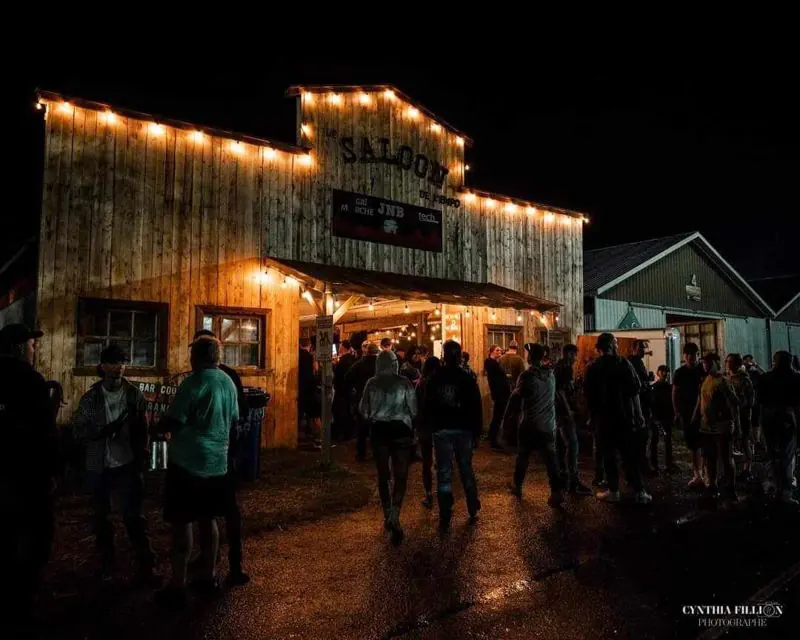
Toute l'année, le palais des commerces ou le Saloon de la grange 3, avec les tables, les chaises et l'ambiance comprises.
Demander une dateL'été, danse en ligne dans la grange 2, de 19 h à 21 h. 20 $ la session. Entre la sortie et la rentrée des roulottes.
Les dates sur Facebook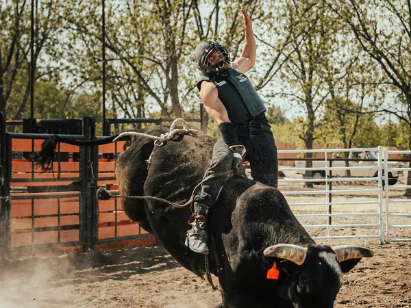
Nouveau en 2027
Monte de taureaux, sur le site de l'Expo. Dates et billets annoncés au printemps, avec la programmation.
Être avisé sur FacebookChoisissez ce qui vous allume. Voici ce qu'il y avait en 2026; la programmation 2027 sera dévoilée au printemps.
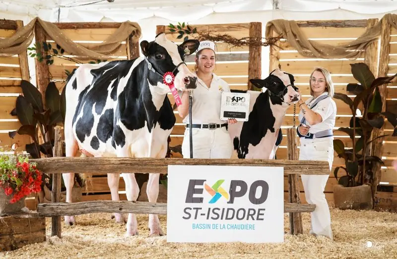
La raison d'être de l'Expo depuis 1983 : les éleveurs de la région viennent comparer leur bétail sous la tente de jugement.
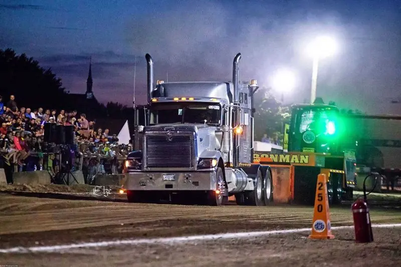
Deux soirs de compétition ASTTQ : Super Stock, Pro Farm, 4x4 modifiés et semi-remorques, devant des estrades pleines.
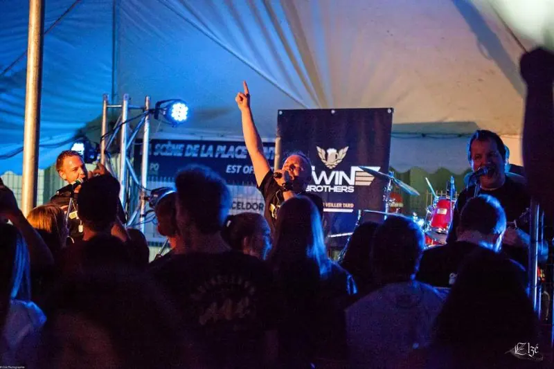
Chaque soir sous le grand chapiteau, la plupart gratuits, et de la danse country à l'aréna.
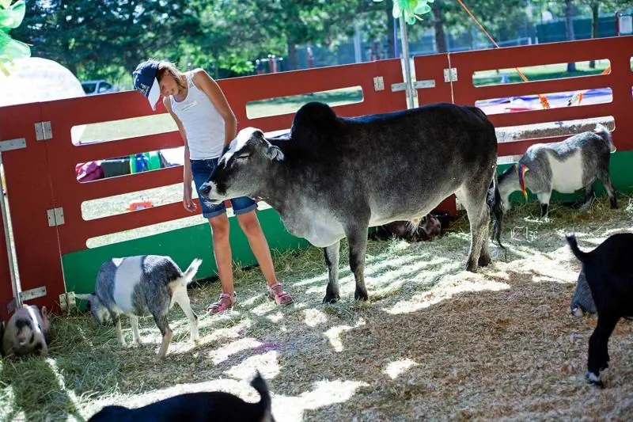
La Place de la famille Desjardins : jeux gonflables gratuits, mini-ferme, cinéma en plein air et feux d'artifice.
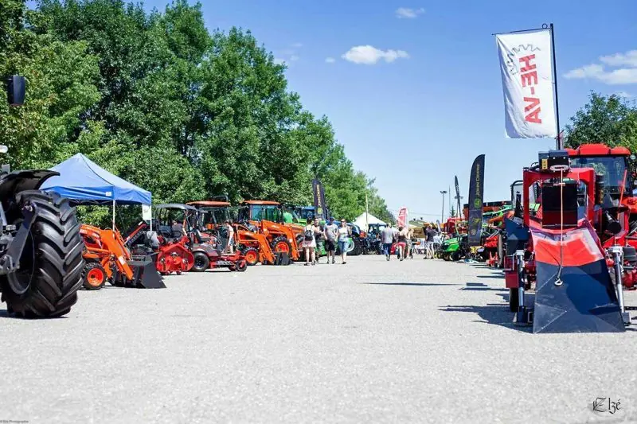
Concessionnaires, producteurs, artisans et le palais des commerces, du jeudi au dimanche.
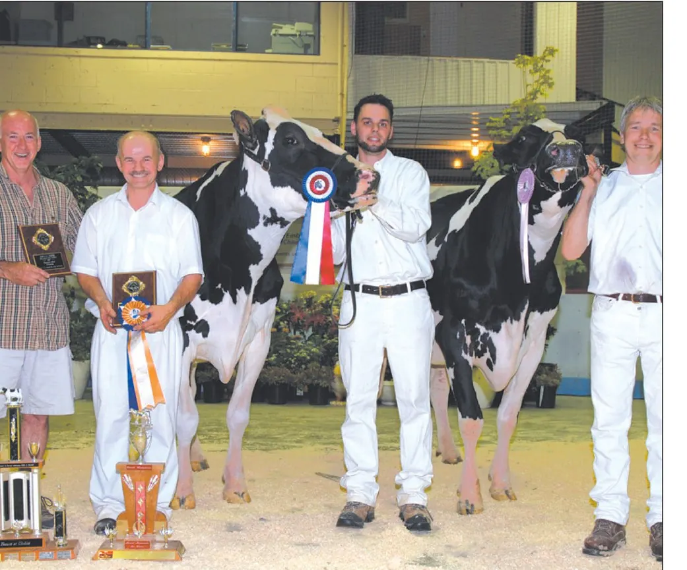
« Créée par 28 producteurs visionnaires. »
À l'automne 1982, des producteurs de la Beauce, de Lévis et de Dorchester veulent comparer leur bétail. Ils imaginent un « party agricole » ouvert à tous. Plus de 40 ans plus tard, l'idée tient toujours, grâce aux bénévoles.
Lire l'histoire et nos bâtisseurs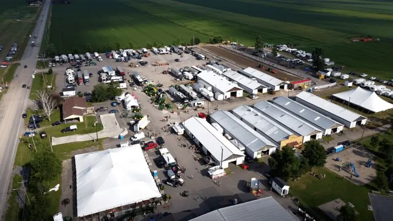